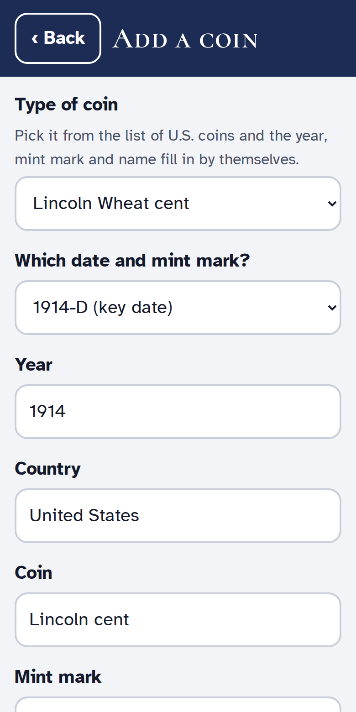
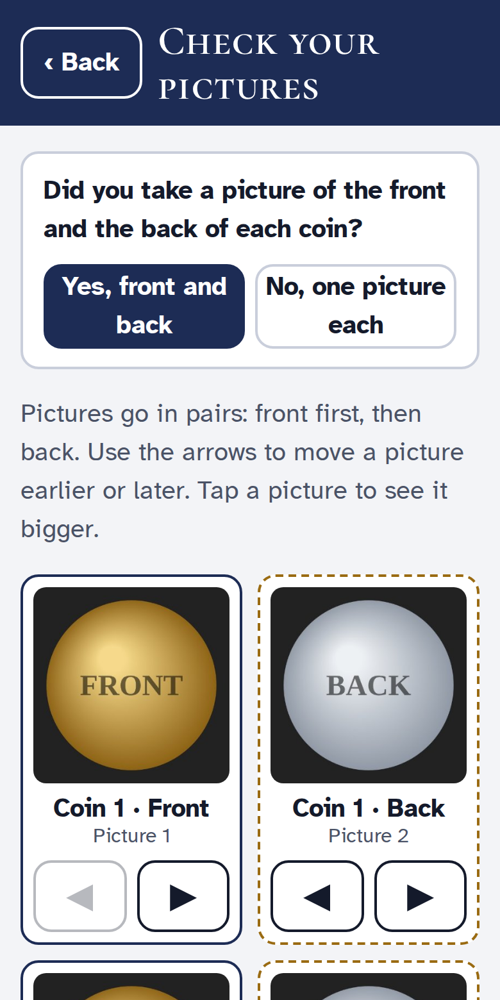
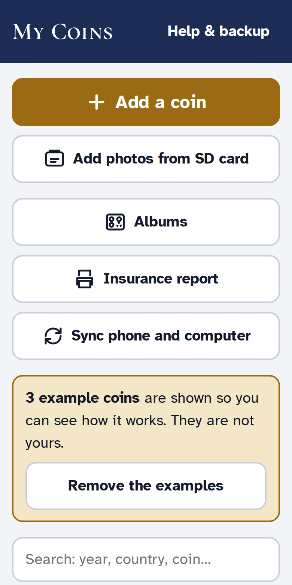
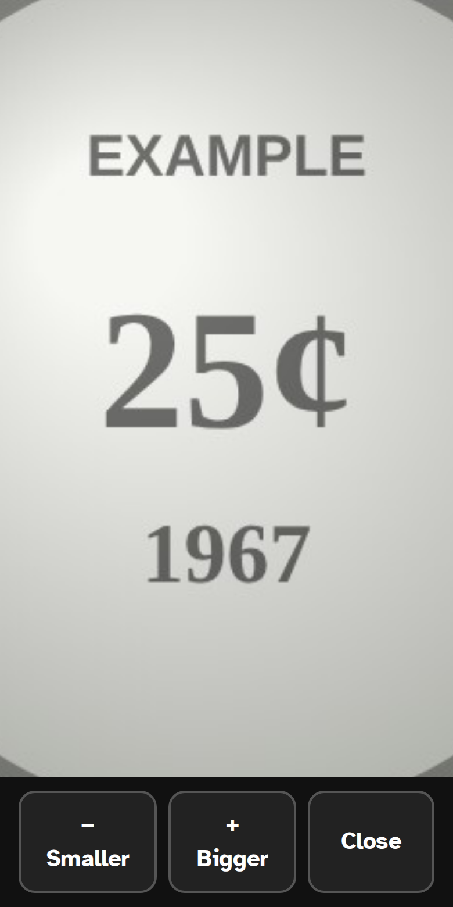
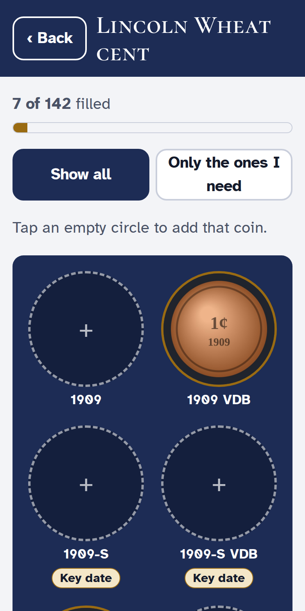
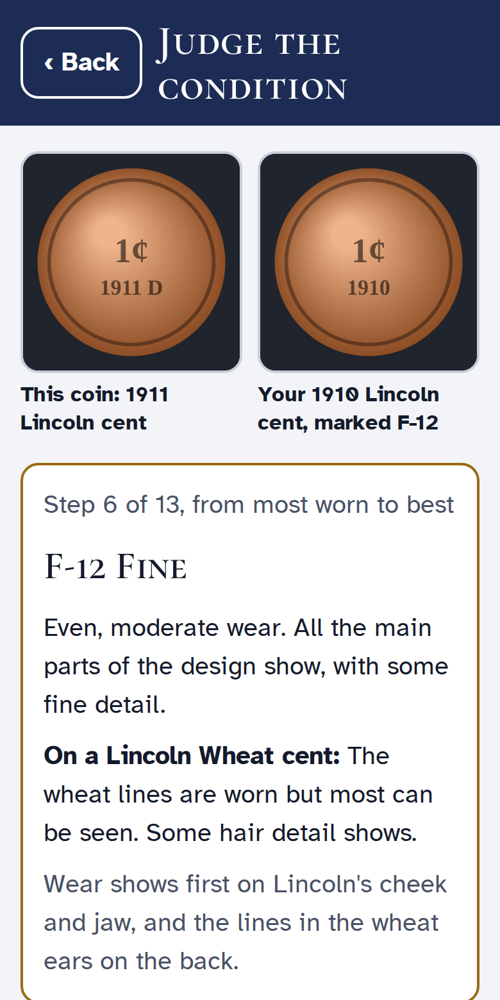
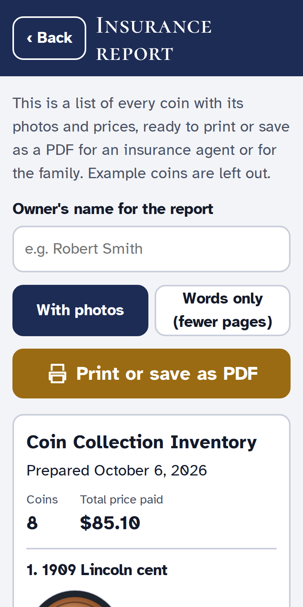
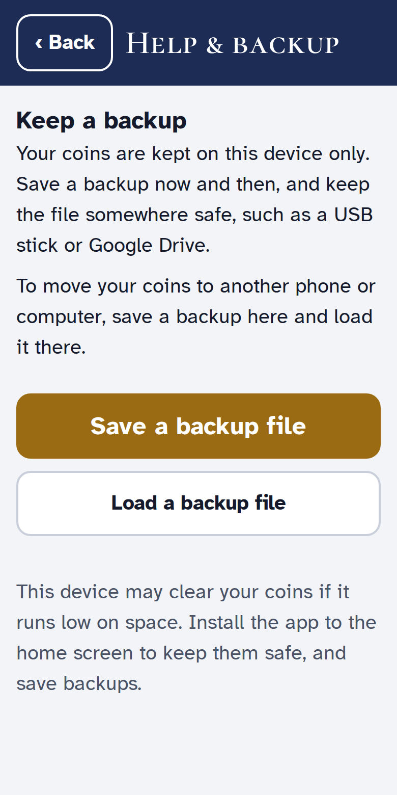
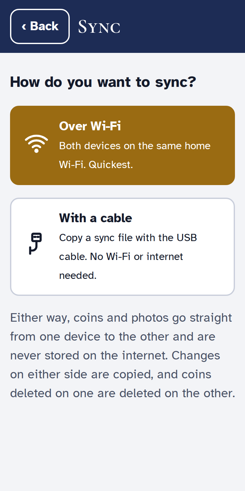
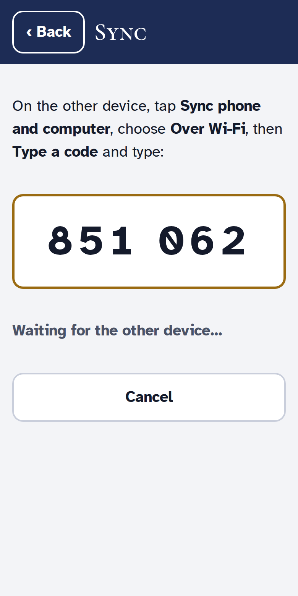

A simple app for keeping pictures and notes about every coin in your collection. It works on your phone and on your computer, and it keeps your pictures to yourself.
The app's address on the internet is:
Your coin pictures stay on your own phone or computer. They are never sent anywhere.
There is no account and no password. The app never asks for money or personal details.
Save a backup once a month so you never lose your collection (see page 12).
You only do this once. Afterwards a gold coin button called My Coins opens the app, even without internet.

The list has United States coins from 1859 on. If your coin is from another country, or not on the list, choose Not on the list, or not sure and type the details yourself.
Your microscope saves its pictures on a small SD card. You can bring in many pictures at once and fill in the details later.
On a phone: if you only see recent photos, tap ☰ or Browse and choose the SD card from the list.
After you pick the pictures, the app shows them 6 at a time and asks one question:
"Did you take a picture of the front and the back of each coin?"

Tip: tap any picture to see it bigger before you decide. If a coin ends up with its front and back the wrong way round, open it and tap Swap front and back.
The first screen shows all your coins as large round pictures, newest first.
When you first open the app you will see 3 example coins. They are pretend. Tap Remove the examples when you are ready.

On a coin's page, tap Zoom in on this photo. Then use the big + Bigger and − Smaller buttons, or spread two fingers apart on the picture. Slide one finger to move around. Tap Close when done.
Tap Change details to fix anything. Swap front and back switches the two pictures. Delete this coin always asks you first, so nothing is removed by accident.

A coin's page also shows About the coin: the metal, weight, size, how much silver is in it, who designed it and where to look for the mint mark. Hard-to-find dates say Key date.
An album shows every date and mint mark of one kind of coin, like a cardboard coin folder.

Going to a coin show? Tap Only the ones I need to see just the empty spots. Key date marks the hard-to-find ones.
If one of your coins is not in its album, open it, tap Change details and pick its Type of coin and date. Then tap Show it in the album to see its spot.
Not sure if a coin is Fine or Very Fine? The app walks you through it.

Photos from PCGS. PCGS, the coin grading company, shows photos of real coins at every grade. At the bottom of the same screen, tap See the PCGS photos of each grade. Their website opens in Chrome. Choose the kind of coin the app names, then compare. This needs the internet. Close Chrome's tab to come back to the app.
The app can make a printed list of your whole collection, with pictures and prices. It is useful for your insurance agent and for the family.

Print a fresh list once a year, or after you buy something special. Keep one copy at home and give one to your agent.
Your coins are kept inside the app on that one phone or computer. A backup is a single file holding all your coins and pictures. If the phone is lost or broken, the backup brings everything back.

The phone and the computer each keep their own coins. Sync brings them together, so a coin added, changed or deleted on one is the same on the other.
Either way, your coins and pictures go straight from one device to the other. They are never stored on the internet.

Both devices must be on the same home Wi-Fi, with the app open.

It doesn't matter which device shows the code. If it says it can't reach the other device, check that both are on the same Wi-Fi and try again.
No Wi-Fi? A sync file does the same job using the phone's charging cable.
Do the same the other way round: save a sync file on the phone and load it on the computer.
Loading a sync file only takes changes that are newer. Loading the same file twice does no harm.
| I can't find the app | Look for the gold coin called My Coins on the phone's home screen, or in the computer's Start menu. |
| I only see recent photos, not the SD card | Tap ☰ or Browse in the picture chooser and pick the SD card. |
| My coins are not on the computer | Tap Sync phone and computer on both and follow the steps (page 13). |
| A coin is not in its album | Open the coin, tap Change details and pick its Type of coin and date. |
| The writing is too small | On a computer, hold Ctrl and press +. On a phone, make the text bigger in the phone's Settings under Display. |
| Is my collection protected? | Open Help & backup. A line with a ✓ means the device will keep your coins permanently. |
Name:
Phone: